Multifocais digitaisTecnologia freeformAntirreflexo DiamondFiltro azulTransitions Gen SExame de vista aos sábadosCrediário BemolEntrega rápidaMultifocais digitaisTecnologia freeformAntirreflexo DiamondFiltro azulTransitions Gen SExame de vista aos sábadosCrediário BemolEntrega rápida
Em 30 segundos
Qual lente combina com você?
Responda a 4 perguntas rápidas e veja a linha Inoovax indicada para a sua rotina. Na loja, confirmamos tudo com a sua receita.
Família Inoovax
Uma lente para cada olhar
Cada linha tem um design próprio, gerado a partir da sua receita e das suas medidas. Toque em uma lente para ver os detalhes.
Lentes de grau a partir de R$ 579,99 o par. O valor final depende da receita, do material e dos tratamentos. Condições na loja.
Comparador
Compare duas lentes lado a lado
Notas de 1 a 5 da tabela oficial Inoovax para visão de longe, intermediária, de perto, conforto e adaptação.
vs
Tecnologia freeform
Uma lente desenhada só para você
As progressivas Inoovax unem as suas informações pessoais e a sua receita para gerar um desenho único. São lentes asféricas e assimétricas, que facilitam a visão com os dois olhos e diminuem a sensação de flutuação e as distorções nas laterais.
01Surfaçagem ponto a ponto
02Personalização única
03Campos visuais amplos
04Distorções reduzidas
05Transição inteligente
06Bordas reduzidas em graus altos
Espessura da lente
Arraste e veja como o índice do material deixa a lente mais fina (ilustração para um grau alto de miopia).
1.501.561.591.601.671.74
CR-39 (1.50)Material clássico, leve e com ótima qualidade óptica.
Tratamentos
O que faz a diferença no dia a dia
Antirreflexo Diamond
Camadas protetoras que aumentam a resistência a riscos, marcas de gordura e sujeira. A lente fica limpa por mais tempo, a visão fica nítida em qualquer ambiente e o acabamento é discreto.
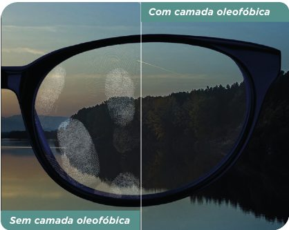
Oleofóbica: menos marcas de dedo
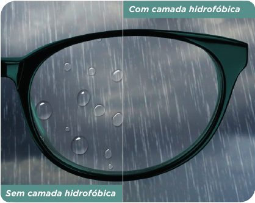
Hidrofóbica: a água escorre
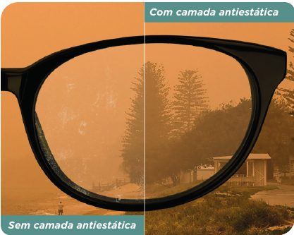
Antiestática: menos poeira
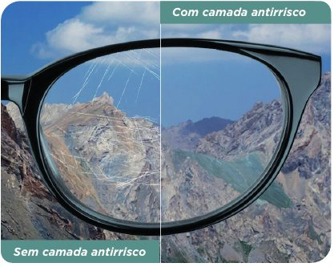
Antirrisco: mais resistência
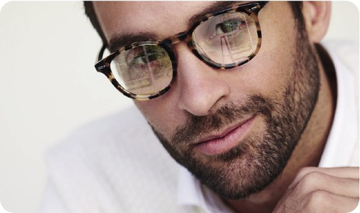
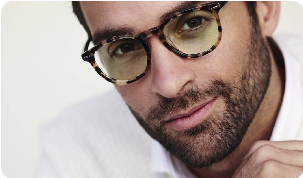
Sem antirreflexoCom Diamond
Filtro de luz azul
Celular, computador e TV emitem luz azul-violeta. O tratamento Diamond Blue filtra parte dessa luz e deixa o uso das telas mais confortável, sem mudar a cor do que você vê.
Para quem passa horas no computador ou no celular
Combina com qualquer linha Inoovax
Versões Diamond Blue Externo e Diamond Blue Total
Sem filtroCom filtro azul
Transitions Gen S
A lente clareia em ambientes internos e escurece no sol, sozinha. Escolha a cor que combina com você:
Cinza · ambiente interno
Como funciona
Do exame aos óculos prontos
Receita ou exame
Traga a receita do seu oftalmologista ou faça o exame de vista na loja, aos sábados.
Armação
Masculinas, femininas, infantis e solares. Ajudamos a achar a que combina com você.
Lente sob medida
Tiramos as medidas e indicamos a linha Inoovax e os tratamentos certos.
Entrega rápida
Montamos seus óculos e avisamos pelo WhatsApp quando estiverem prontos.
A loja
Um espaço claro e acolhedor
Experimente as armações com calma, tire todas as dúvidas e saia sabendo exatamente o que está levando.
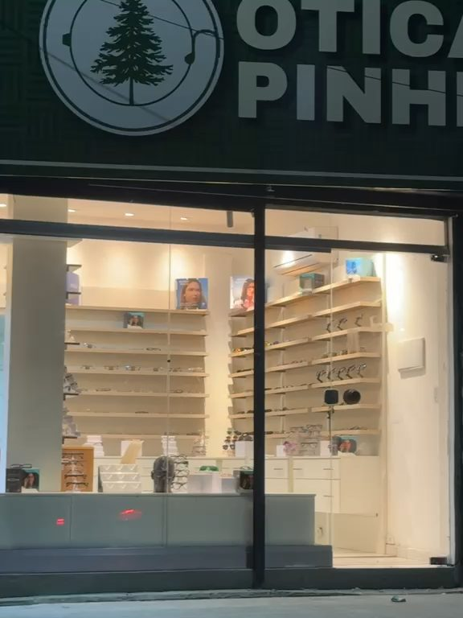
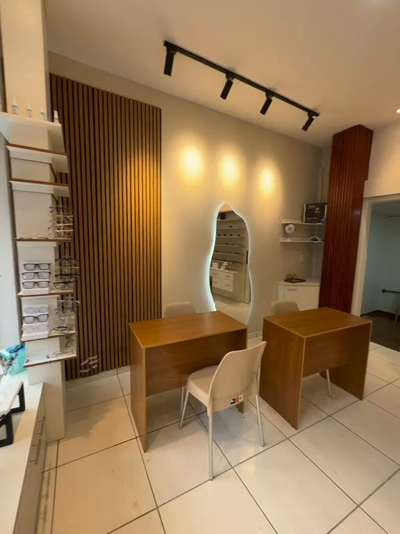
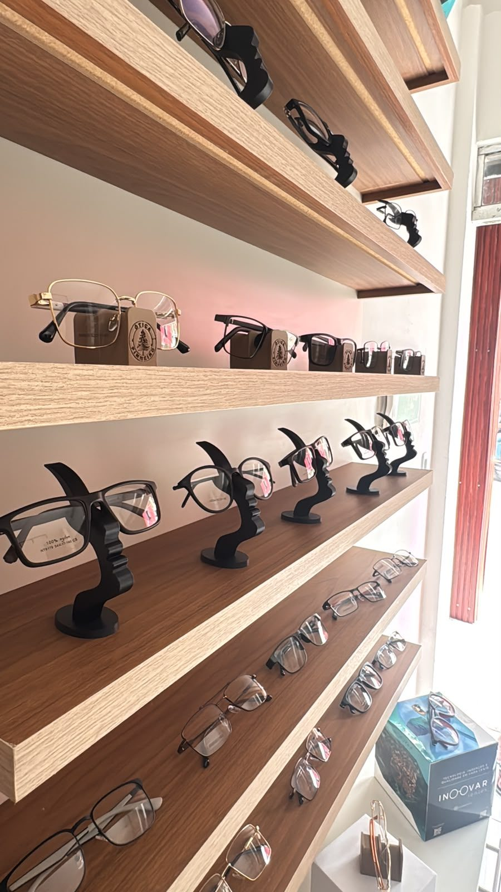
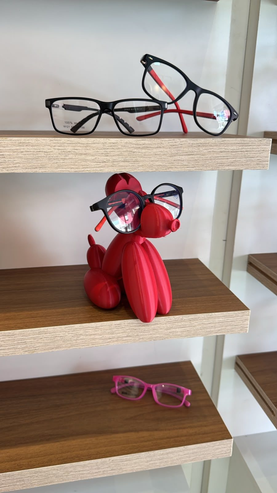
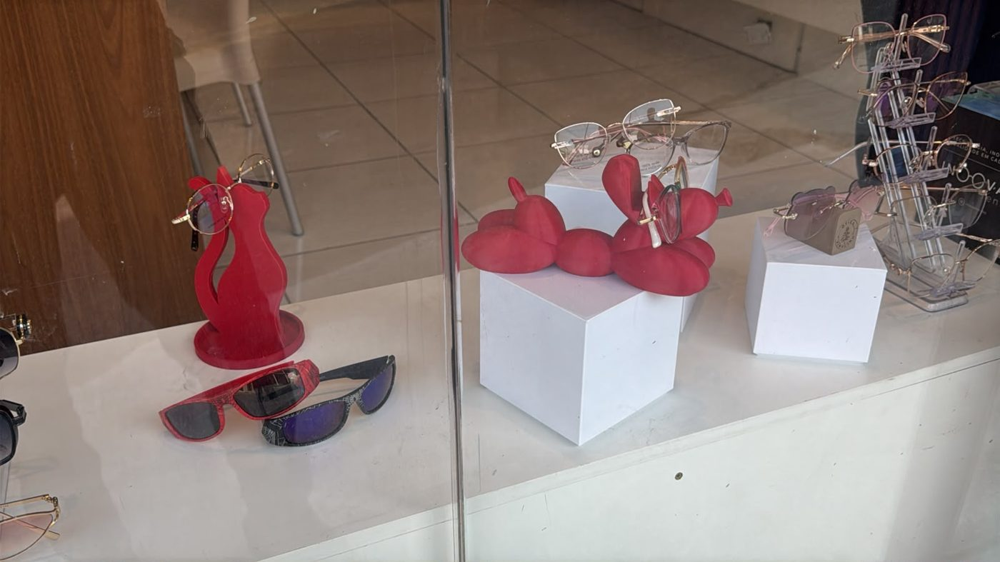
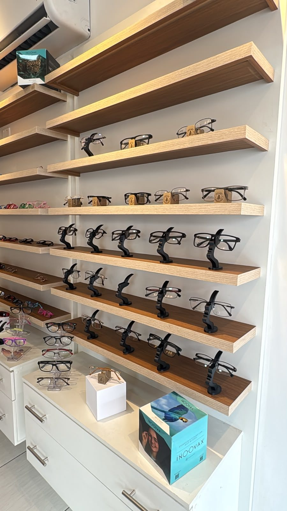
Formas de pagamento
Pix
Cartão de débito
Cartão de crédito
Dinheiro
Crediário Bemol
Visite
Estamos no Jorge Teixeira
Endereço
R. Guapé, 72 – Jorge Teixeira Manaus – AM, 69088-128
Para óculos de grau, sim. Traga a receita do seu oftalmologista ou faça o exame de vista na loja, aos sábados pela manhã.
Como marco o exame de vista?
Chame no WhatsApp (92) 99309-5763 e combine o melhor horário no sábado, entre 8h e 12h.
Multifocal é difícil de acostumar?
As lentes digitais freeform têm transições suaves e campos amplos, o que facilita a adaptação. Explicamos como usar nos primeiros dias e acompanhamos você.
Quanto tempo demora para ficar pronto?
Depende da lente escolhida. Informamos o prazo no orçamento e avisamos pelo WhatsApp assim que os óculos estiverem prontos.
Posso pedir orçamento pelo WhatsApp?
Pode. Mande uma foto da receita e conte como é a sua rotina. Respondemos com as opções de lente e os valores.
Quais as formas de pagamento?
Pix, cartão de débito, cartão de crédito, dinheiro e Crediário Bemol. Condições na loja.
Pronto para enxergar melhor?
Mande sua receita e receba as opções de lente com os valores.